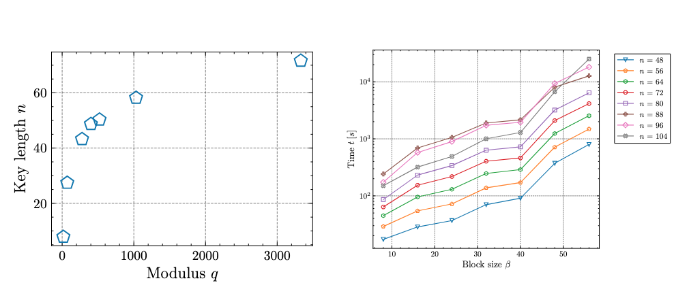

Deakin Yearbook
Analysis of research on lattice-based cryptography schemes, including the security and implementation of Learning With Errors (LWE) and its relationship to NP-hard problems Shortest Vector Problem (SVP) and Closest Vector Problem (CVP). Focused on the mathematics behind the concepts, as well as next steps in my learning journey. My work was done for SIT281, Cryptograpy, and is getting published in the Deakin Mathematics Yearbook of 2025, and is available here.
Unabridged Chapter Extensions
Important Algorithms in Lattice Reductions
A section I would have loved to include in the book is a little section on LLL and BKZ, for introduction purposes:
In my GitHub, I give examples of how the LLL algorithm can be used to find the shortest basis vector within a lattice, thereby allowing us to better solve CVP and SVP [work], with simple examples in dimensions 2 and 3. Whilst this is useful to understand the concepts, lattice bases for encryption are at least dimension \( n > 500 \). For this, we need more accurate solutions.
LLL algorithm is extremely fast and often used as pre-processing; the BKZ algorithm is also accurate, but takes much, much longer [ias]. There have been several edits to BKZ over the years, and something I am particularly interested in are the edits that involve SVP Oracles, which involve SVP algorithms that can only be applied to lattices with a small dimension when there are restricted resources.
LLL uses Gram-Schmidt Orthogonalisation as well as the Lovasz condition to reduce the basis vectors within a lattice to give the smallest first, ensuring they are as orthonormal and orthogonal as possible. BKZ follows the same approach but is able to give more accurate results because it applies LLL as a pre-process before "chunking" the lattice into sections called blocks to further reduce with more accuracy.
The block size is simply the number of vectors that we are tuning in the overall matrix that represents the lattice when we try and solve for the Shortest Vector Problem. In fact, BKZ 1.0 is just LLL but with a block size of 2 (swapping one row with another at a time until the complexity and continuity has been reached, repeating across the entire matrix).
Three papers in particular were studied to provide a discussion on how BKZ differs from LLL with different block sizes. According to [5], there have been some recent improvements with BKZ in the way that block sizes are chosen.
Current Improvements & Open Questions
Ok, great. Blocks help. But how many vectors should make up a block? The process of picking the "best" number of vectors to perform the first "mini-LLL" process on within BKZ, governed by some bound \( B \), is called Discrete-Pruning Enumeration (5-ENUM), which was formalized by [4]. They showed that the technique of choosing lattice points to “sample” using the classical enumeration technique before running BKZ was a valid improvement in solving for the shortest basis vector. The success probability of this "discrete pruning" was shown to be equivalent to the volume of the sphere in which these subsets of vectors in the lattice existed [4].
Though that paper showed [4] that lattice enumeration and discrete pruning variants could be quadratically sped up on a quantum computer, there is still an uncertain statistic on the size of the "blocks" required before significant accuracy is gained over LLL, and it remains unclear when LLL becomes significantly faster. Authors of [3] also indicated that one analysis is not enough to gain a good insight into their accuracy, and further experimentation was needed.

Recent results from [2] showed that the time it took BKZ, based on the size of the modulus in Learning-With-Error (LWE) type problems, makes it clear that as the modulus increases, the growth in time increases exponentially.
Ties to future work
One area I am interested in is lattice reduction reductions. At the moment, we have talked mostly about basis reductions, which are different to lattice reductions. Lattice reductions means, change the underlying lattice struture, which is very useful for further reduction techniques that necessarily do not have to reply on basis techniqeus. Basis techniques include those such as BKZ and LLL, and, it is possible that other options that do not rely on frameworks on the basis, might be equally well performing but rely on less information to compute.
An interesting paper was done by Thomas Espitau, which I am currently reading. Lets see how that goes ... :)
Bibliography
Dedication
More people to dedicate it to - any why not.